CAPSTONE PROJECT | FINAL CONSOLIDATED REPORT | SPRINTS 1-5
Container Image Vulnerability Scanner with Reporting
A policy-driven container scanning system with auditable reports, CI gates, Slack notifications, governed exceptions and persistent vulnerability monitoring.
https://github.com/TabrezAjaz/CapstoneProject | Operating documentation | Printable PDF edition
This report documents my project objectives, implementation, testing and results across five sprints. Screenshots and original execution artifacts accompany the results. Vulnerability counts depend on the scan date, image and advisory database.
1. Executive Summary
My objective was to integrate container vulnerability scanning into a repeatable development workflow, with clear security decisions and reviewable results. I used Trivy as the scanning engine and implemented a Python wrapper to load configuration, validate results, apply approved exceptions, write normalized evidence and return consistent exit codes. GitHub Actions and Jenkins use the same implementation.
A strict reporting layer renders JSON, HTML and PDF from one canonical model and publishes SHA-256 manifests. Slack messages distinguish severity and scheduled portfolio summaries. A separate local monitoring deployment imports original observations into SQLite and exposes a read-only Flask/Chart.js dashboard and Prometheus metrics; Grafana queries Prometheus for sampled time-series views.
The final implementation includes reasoned, scoped and expiring exceptions, preserved suppression audit, fresh rescan lineage, classified retries, process deadlines and atomic artifact writes. The integrated suite contains 77 deterministic tests. GitHub main run #31, for baseline 399d1af, completed successfully. Its Slack step was skipped, not delivered, because the repository secret is absent.
2. Objectives and Requirement Traceability
| Sprint | Acceptance objective | Delivered implementation | Primary evidence |
|---|---|---|---|
| 1 | Establish repository, install scanner and perform image scans | Python wrapper, YAML configuration, pinned Trivy and normalized findings | Fresh core verification log; original baseline/rescan artifacts; latest real CI scan |
| 2 | Make vulnerability scanning a CI/CD gate | Shared severity policy, stable exits, GitHub/Jenkins pipelines and retained evidence | Real passing and intentionally blocked GitHub/Jenkins captures |
| 3 | Generate reports, notify and automate summaries | JSON/HTML/PDF, checksum manifest, Slack transport, daily/weekly jobs | Generated report bundle; main HIGH/CRITICAL delivery records; default-cadence runs |
| 4 | Track findings/history with filters and monitoring | SQLite, Flask API/UI, Prometheus exporter and provisioned Grafana | Desktop/mobile captures, target UP, Grafana panels and browser-check JSON |
| 5 | Manage accepted risk, rescans and failures | Expiring scoped policy, suppression audit, fresh lineage, bounded retries and strict validation | Approved/expired artifacts, rescan lineage, audit report and 77-test JUnit evidence |
Scope: OS-package vulnerabilities are scanned by default, including unfixed findings. Language dependency scanning, Teams/email delivery, automatic registry-digest watches and a publicly authenticated monitoring service are outside the delivered scope. The submission covers Sprints 1-5, not a separately claimed Sprint 6.
3. Implementation and Repository
| Component | Technology / location | Responsibility |
|---|---|---|
| Scanning and policy | Trivy 0.74.0; scanner/trivy_scanner.py; scanner/exceptions.py | Execute scans, normalize findings, apply exceptions and enforce exit contracts |
| Configuration | config.yaml; exceptions/allowlist.yaml; .env.example | Non-secret policy defaults and documented environment overrides |
| Reporting | reporters/; Jinja2; ReportLab | Strict artifact loading, canonical model, JSON/HTML/PDF and integrity manifests |
| Notification | notifiers/ | Validated Slack webhook transport with bounded retries and mention sanitization |
| History and metrics | dashboard/; Flask; SQLite; prometheus-client | Idempotent imports, read-only API, exact finding transitions and /metrics |
| Visualization | Vendored Chart.js and Lucide; Prometheus 3.2.1; Grafana 11.6.0 | Local scan exploration and sampled monitoring dashboards |
| CI and tests | .github/workflows/; ci/; tests/ | Real scans, gate/report orchestration, deterministic tests and evidence archives |
CI uses Python 3.12; local verification has used Python 3.14. Python dependencies have bounded version ranges, not a claim of fully locked transitive dependencies. Runtime databases, raw operational outputs, credentials and virtual environments are excluded from Git. Small public demonstration artifacts are intentionally archived under docs/evidence.
I maintained milestone branches for the individual sprints and integrated the final implementation on main. The linked milestone runs record the code and test suite available at that stage; final-version verification is identified separately.
4. Implemented Deployment Architecture
Full-size vector | High-resolution PNG | Editable Mermaid source


GitHub runners and Jenkins agents are alternative execution environments. The scanner runs as a short-lived CLI. The persistent local Flask exporter serves SQLite observations after scans finish; Prometheus scrapes it every 15 seconds and Grafana queries Prometheus. SQLite preserves scan timestamps, while Prometheus records samples from the start of scraping.
5. Sprint 1: Foundation and Basic Scanning
The initial structure separated scanner, configuration, CI, reporting, notification, exceptions, tests and documentation. Trivy was chosen as the underlying scanning engine rather than recreating advisory matching in Python. Registry-reference scans do not require mounting the Docker socket. The scanner downloads/refreshes its advisory database and uses the local cache during analysis.
Setup Procedure
- Clone the project repository and create an isolated Python environment.
- Install the project and development dependencies, then install Trivy 0.74.0 and verify that it is available on PATH.
- Configure scan severity, output paths and timeout in config.yaml. Keep credentials outside version control.
- Scan a clean image and a vulnerable image; check the normalized findings and the corresponding policy exit codes.
Section 14 provides the commands for reproducing the environment, scans, reports and monitoring deployment.
I checked the final scanner version against a clean image and an image with known package vulnerabilities. The command-output log, normalized clean-image and vulnerable-image artifacts record the commands and results. These final verification runs complement the earlier sprint evidence.
| Fresh final-version scan | Original scan ID and UTC time | Observed outcome |
|---|---|---|
| hello-world:latest | 27c31b93-4f66-423d-8dd4-6fbae32a70da2026-10-29T20:54:15.297881Z | 0 findings; 0 blocking; exit 0 |
| alpine:3.19 | 59b455b0-e86c-40a7-8bbe-0ff1ef0b9a212026-10-29T20:54:17.970747Z | 10 active findings including 2 HIGH; 2 blocking; exit 1 |
The log records the scanner version and cached database timestamps. Artifact timestamps use UTC; the local Python log clock uses the host timezone.
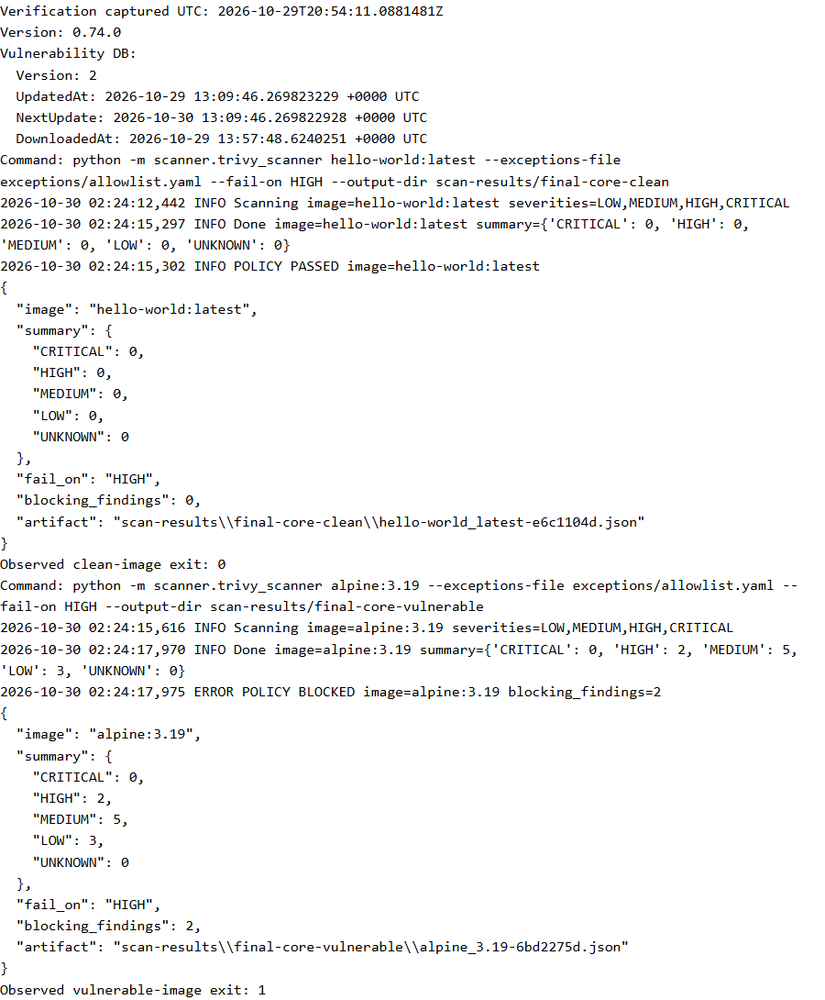
Original dated observations remain available in baseline.json and rescan.json. Their source fields, UUIDs, timestamps, scanner versions and full findings provide inspectable evidence beyond a screenshot.
6. Scanner and Policy Contract
CLI / environment / YAML configuration -> validate policy and exact exception scopes -> invoke Trivy and validate result structure -> normalize raw findings -> separate approved, unexpired findings into suppression audit -> recompute active severity counts and gate -> atomically write normalized scan evidence -> return pass / policy / configuration / operational exit
| Exit | Meaning | Expected action |
|---|---|---|
| 0 | Completed and passed the configured policy | Continue pipeline |
| 1 | Completed but active findings violate the severity gate | Intentional build block; retain reports and artifacts |
| 2 | Invalid CLI/configuration/exception policy | Correct the input; never claim the image is clean |
| 3 | Scanner/registry/timeout/parsing/write operation failed | Investigate operational failure; fail closed |
Precedence is CLI > environment > YAML > defaults. The default threshold is HIGH, with CRITICAL also blocking. Input validation, explicit timeout handling and malformed-output rejection prevent an error or empty malformed object from appearing as a safe scan. The reference environment file is documentation, not automatically loaded dotenv configuration.
7. Sprint 2: CI/CD Integration
GitHub Actions and Jenkins install the pinned engine, refresh the database, run tests and invoke the same wrapper. The scan result is retained while valid artifacts are rendered and archived. Final gate enforcement restores an intentional policy block even when reports and notifications succeed. An upload attempt does not guarantee evidence exists after every possible infrastructure failure.
| Historical verification | Observed outcome | Interpretation |
|---|---|---|
| GitHub gate run #6 | Success with evidence artifact | Passing control path |
| GitHub gate run #5 | Exit 1 with evidence artifact | Successful policy enforcement, not a broken implementation |
| Jenkins Sprint 2 build #2 | hello-world:latest passed; 16 tests at that milestone; JSON archived | Clean image path |
| Jenkins Sprint 2 build #3 | alpine:3.19 blocked with 2 HIGH findings; JSON archived | Threshold block preserved evidence |
| Latest baseline main run #31 | Success for 399d1af: tests, real scan, reports and upload | Current integrated implementation; Slack skipped |


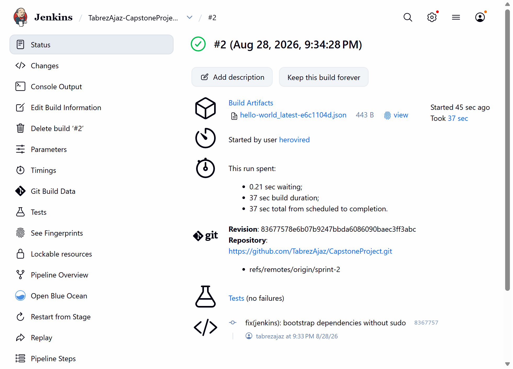

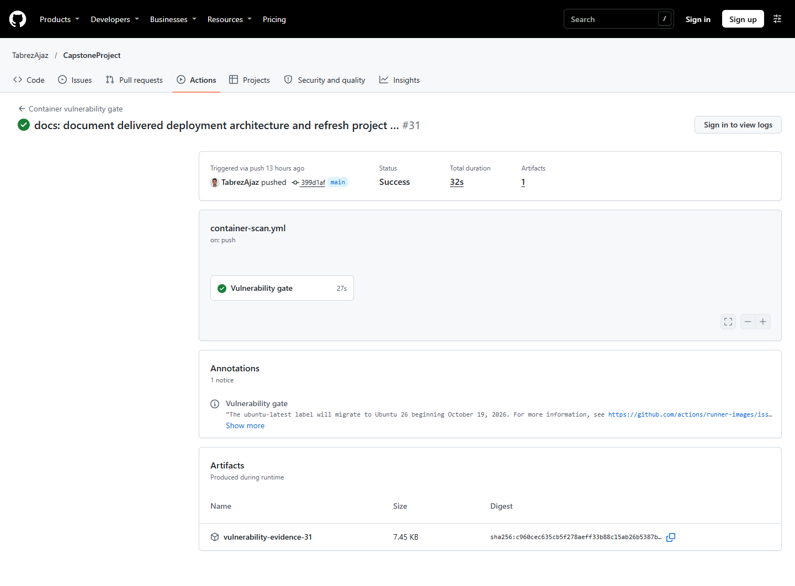
Machine-readable current verification: run metadata, step outcomes and uploaded artifact metadata. The public run URL is 40951355890 / #31.
8. Sprint 3: Reports and Slack Notifications
Schema 1.0 normalized scans feed a strict loader that validates severity counts, policy state and suppression audit. One canonical model generates JSON, autoescaped HTML and PDF. A manifest records output filename, media type, byte size and SHA-256. Checksums demonstrate integrity against a trusted manifest; they do not prove authorship or approval identity.
The archived approved-scan report is available as JSON, HTML and PDF, with its original checksum manifest. All outputs retain the same report identity.
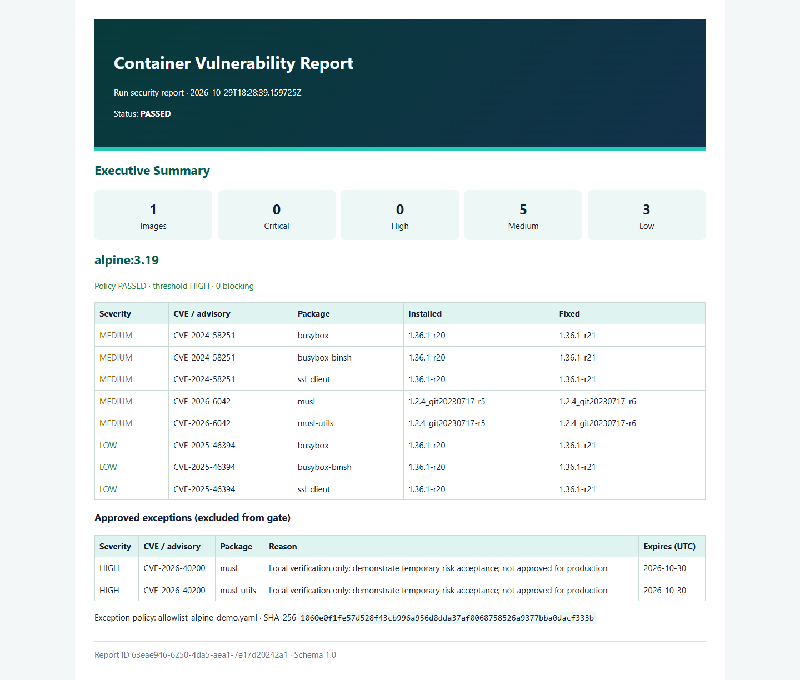
Slack is the implemented provider. Webhooks are injected from environment/CI credentials, validated as permitted HTTPS Slack endpoints and never embedded in project configuration. Messages neutralize mass mentions and limit scan-controlled text. Delivery retries transient HTTP/network conditions and fails operationally after exhaustion.
| Jenkins Sprint 3 execution | Evidence-based result |
|---|---|
| Main build #4: HIGH alert | Intentional policy failure; Slack delivered in one attempt; tests/reports retained |
| Main build #5: CRITICAL alert | Intentional policy failure; Slack delivered in one attempt; reports retained |
| Daily #16 / Weekly #4 | SUCCESS; real Slack transport delivery and archived summary evidence |
| Daily #17 / Weekly #5 | SUCCESS with saved defaults, correct cadence and delivery in one attempt |
I also verified the received messages in the Capstone workspace's #container-security channel on 31 October 2026. Figures 16-19 show the actual HIGH/CRITICAL alerts and daily/weekly summaries, with report IDs and generation timestamps. Original controller links: HIGH #4, CRITICAL #5, Daily #17, Weekly #5. Academic Jenkins may require login and is subject to retention.
The following console records, retained in the Sprint 3 milestone report, show successful Slack transport delivery for alerts and scheduled-summary jobs.
| Execution | Original delivery line |
|---|---|
| HIGH main #4 | [2026-10-29T06:37:57.366Z] Slack notification delivered in 1 attempt(s) |
| CRITICAL main #5 | [2026-10-29T06:38:56.071Z] Slack notification delivered in 1 attempt(s) |
| Daily #16 | [2026-10-29T06:39:35.504Z] Slack notification delivered in 1 attempt(s) |
| Weekly #4 | [2026-10-29T06:40:17.337Z] Slack notification delivered in 1 attempt(s) |
| Daily #17: saved defaults | [2026-10-29T18:28:40.484Z] Slack notification delivered in 1 attempt(s) |
| Weekly #5: saved defaults | [2026-10-29T18:27:53.087Z] Slack notification delivered in 1 attempt(s) |


9. Scheduled Automation
| Platform | Configured cadence | Validation boundary |
|---|---|---|
| GitHub Actions | Daily 02:23 UTC; Monday 03:41 UTC | Scheduled run #2 completed successfully with the platform-recorded event type schedule. Earlier manual run #1 remains separate evidence. |
| Jenkins daily job | H 2 * * * UTC | Saved trigger and default auto cadence/NOTIFY=true verified; manually triggered default build #17 succeeded. |
| Jenkins weekly job | H 3 * * 1 UTC | Job name ending -Weekly selects weekly in auto mode; manually triggered default build #5 succeeded. |
Scheduled summaries refresh the database and rescan configured images. A policy block is a valid portfolio summary result; operational failures fail the summary job. GitHub run #2 provides actual scheduled-trigger evidence, while the listed Jenkins default-parameter checks were manually triggered. Platform scheduling may delay execution beyond the configured cron time.
10. Sprint 4: Persistent History and Monitoring
The local importer accepts normalized scan artifacts, not report JSON or raw Trivy output. SQLite imports are transactional and idempotent by scan ID; conflicting ID reuse is rejected. Flask exposes a read-only API, history filters, scan details, approved-exception audit, JSON download and Prometheus exposition. Imports remain a local CLI action.
| Service | Loopback URL | Persistence / role |
|---|---|---|
| Optional direct local Flask server | 127.0.0.1:5050 | Local development demonstration using the same history |
| Container Flask exporter/UI | 127.0.0.1:5051 | Read-only HTTP surface; host SQLite bind mount |
| Prometheus | 127.0.0.1:9095 | 15-second scrapes; 15-day TSDB retention; named volume |
| Grafana | 127.0.0.1:3030/d/container-security | Provisioned datasource/eight panels; anonymous Viewer; named volume |
Latest active findings are pending. New and resolved findings compare exact advisory/package pairs against the previous stored observation. Suppressed pairs remain in this comparison, so accepting risk is not falsely reported as remediation. First observations are baselines. These transition metrics are gauges, not fabricated cumulative counters.
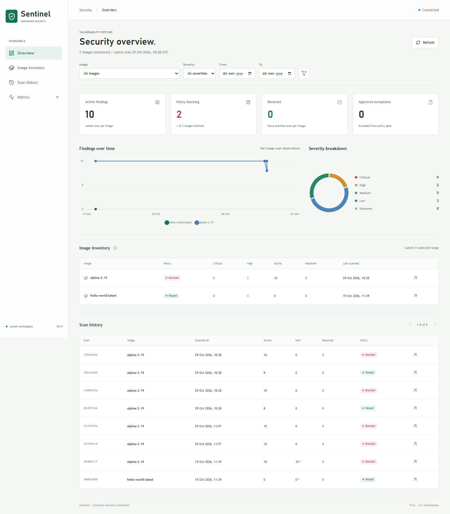
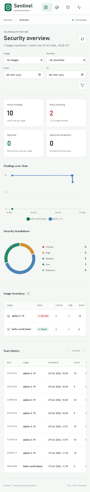
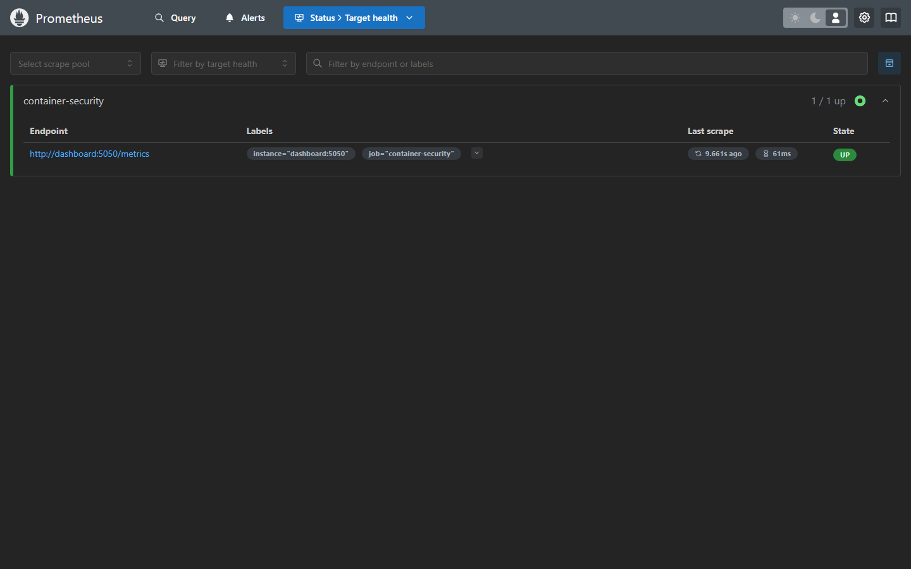
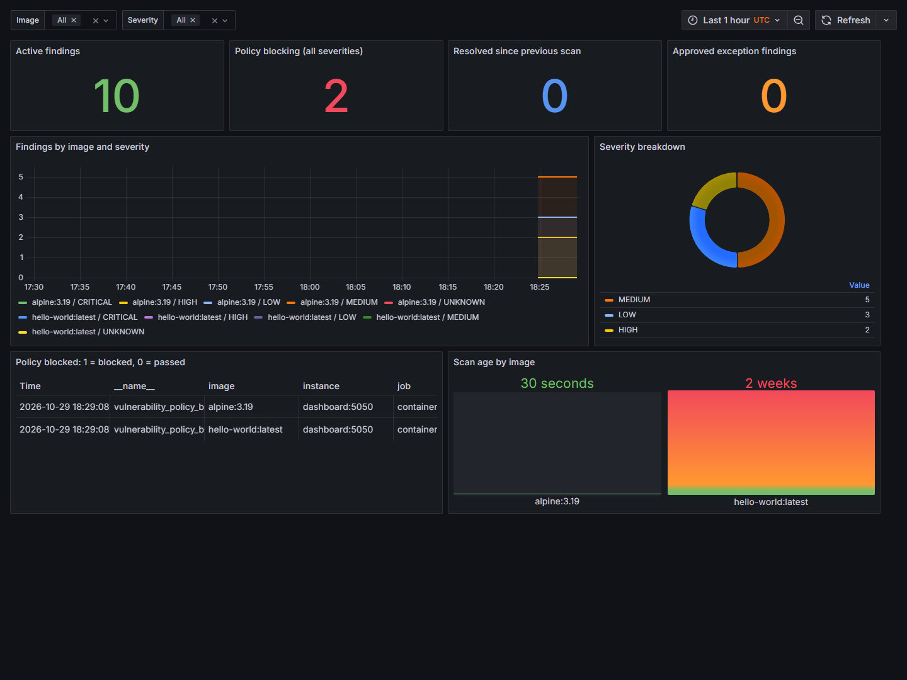
Browser verification is archived in the original browser-check JSON. Checks cover 1440x1080 and 390x844, API/UI totals, filters, empty and invalid-date states, scan drilldown, deep-linked exception audit, nonblank canvas pixels and no JavaScript errors.
11. Sprint 5: Governed Exceptions, Rescans and Reliability
Exception rules require an exact advisory ID, a nonempty reason and a real YYYY-MM-DD expiry. Optional image/package scopes also match exactly; wildcards and duplicate scopes are rejected. The default production allowlist is empty. Expiry is inclusive through the specified UTC date, evaluated at scan time. Missing or malformed configured policies fail before scanning.
Suppression occurs before gate evaluation while preserving raw counts, approved findings, scope, justification, expiry and policy checksum. Implicit Trivy ignorefiles are disabled to prevent unaudited suppression. Accepted risk is distinct from a vulnerability being fixed.
| Real 29 October Alpine demonstration | Active / suppressed | Exit | Original evidence |
|---|---|---|---|
| Temporary non-production approval | 8 active; 2 HIGH suppressed; 0 blocking | 0 | approved.json |
| Expired rule | 10 active; 0 suppressed; 2 HIGH blocking | 1 | expired.json |
| Missing configured exception file | No scan performed | 2 | Deterministic tests and Sprint 5 execution record |
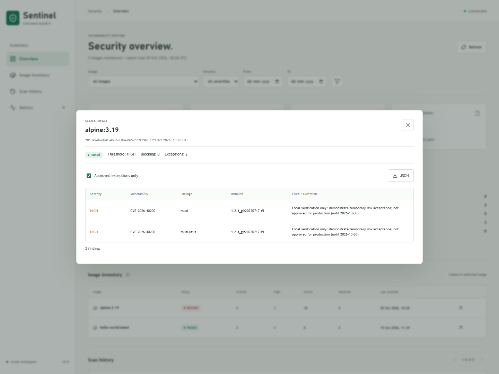
Fresh Rescan Lineage
Baseline fa356ec8-553d-4769-bb81-20aeb03b599b at 2026-10-29T13:57:51.161781Z was followed by a real new Trivy scan 3531bf6a-0b7e-491d-aebb-b4d881adb621 at 2026-10-29T13:57:53.922734Z. Its rescan_of points to the baseline. Both were blocked; no remediation was invented. The artifacts are linked in the evidence register.
Reliability Controls
Defaults permit two retries after the initial attempt with 1s/2s exponential delays. Recognized transient network/registry conditions and process timeouts may retry; authentication failures, missing manifests/executables and invalid JSON fail fast. Each attempt has the configured Trivy timeout plus a 30s outer deadline. Database refresh shares the classified retry helper. Atomic replacement prevents partial successful-looking JSON artifacts.
Recovery, exhaustion, permanent failures, deadlines, malformed result structures and write failures are covered by controlled deterministic tests. A live registry outage or network fault injection was not performed and is not claimed.
12. Verification Matrix
| Verification | Evidence / observed result | Status |
|---|---|---|
| Integrated tests | 77 deterministic tests; archived JUnit: 0 failures, 0 errors | Verified |
| Local integrated test run | JUnit results and original test output | Evidence attached |
| Final main CI verification | Run #34 / 480ec2d; success; deterministic tests, real scan, reports and upload completed | Verified on 31 October |
| Clean and vulnerable scan paths | Original final-version core log/artifacts plus historical real CI pass/block captures | Verified |
| Report integrity | Original JSON/HTML/PDF manifests match archived bytes, including clean Git checkout verification | Verified |
| Slack transport | Jenkins HIGH/CRITICAL and daily/weekly delivery logs | Verified on Jenkins |
| Slack channel receipt | Authenticated channel screenshots of HIGH/CRITICAL alerts and daily/weekly summaries; original IDs and timestamps visible | Verified on 31 October |
| GitHub Slack | Runs #34 and scheduled #2 skipped Slack; final repository settings check showed no repository secrets | Credential setup pending |
| GitHub scheduled trigger | Summary run #2 completed successfully with event type schedule | Verified |
| Historical UI and monitoring | Real screenshots, browser-check JSON and observed exporter/Grafana health | Verified at capture |
| Approved and expired exceptions | Original active/suppressed artifacts and gate exits 0/1 | Verified |
| Rescan lineage | New UUID/time and rescan_of; actual new scan invocation | Verified |
Milestone test counts increased as the project grew: Sprint 2 had 16 tests, Sprint 3 had 28, isolated Sprint 4 had 35 and the integrated final suite has 77. Dashboard verification used eight stored scan observations; large-scale production benchmarking is outside the evaluation scope.
13. Security, Limitations and Outstanding Actions
- Webhooks are stored in CI secret stores. Rotation of the previously exposed webhook must be confirmed separately; channel screenshots do not verify credential rotation.
- GitHub and Jenkins secret stores are separate. Final main run #34 and scheduled run #2 skipped Slack, and the final repository-settings check showed no repository secrets. GitHub delivery requires SLACK_WEBHOOK_URL to be saved privately and a fresh notification run verified. Jenkins transport and the captured Slack messages remain separate verified evidence.
- Slack channel receipt is verified by Figures 16-19. Daily and weekly message labels demonstrate summary delivery; they do not by themselves prove that a particular platform cron triggered the source run.
- Allowlist changes need human review and branch controls. The code does not establish an approver identity or enforce organization governance by itself.
- Loopback binding, read-only API, nonroot dashboard container and restrictive web headers reduce exposure. Flask development hosting and anonymous Grafana Viewer are not a public production security model.
- Monitoring history requires explicit artifact download/import. No central CI collector, remote write API, Node Exporter or Pushgateway is deployed.
- Prometheus rules cover stale scans/exporter health/critical findings. Alertmanager-based external delivery is not configured.
- Registry/image tags and advisory databases change. Pinned scanner versions alone do not make future scan counts deterministic.
- Absence of a finding within the selected scan scope is not proof of patch installation or absence of all security risk.
- Python dependencies are bounded ranges; action references use release tags rather than universal commit-SHA pinning. Broader supply-chain hardening is future work.
- No paid infrastructure is provisioned. Local compute, downloads, service quotas, retention and academic Jenkins availability still have operational constraints.
14. Reproduction and Handover
From the cloned repository root, install Python dependencies and Trivy 0.74.0 on PATH. Registry-reference scans do not require the Docker socket. Docker Desktop/Engine is needed for the optional monitoring stack.
python -m venv .venv .\.venv\Scripts\Activate.ps1 python -m pip install -r requirements-dev.txt trivy --version python -m pytest tests -q python -m scanner.trivy_scanner hello-world:latest # An Alpine HIGH-threshold scan may intentionally return exit 1. python -m scanner.trivy_scanner alpine:3.19 --fail-on HIGH $artifacts = @(Get-ChildItem scan-results -Filter '*-????????.json' | ForEach-Object FullName) python -m reporters.cli @artifacts --formats json,html,pdf --output-dir reports python -m dashboard.cli @artifacts --metrics-file reports/scan-metrics.prom python -m dashboard.app --port 5050
Open the local dashboard at http://127.0.0.1:5050. To run the provisioned exporter/Prometheus/Grafana stack, set GRAFANA_ADMIN_PASSWORD privately in the terminal and run docker compose -f dashboard/compose.yaml up -d --build. Credentials must not be committed to the repository. Avoid down -v unless deletion of monitoring history is intended.
CI evidence can be downloaded and imported using the same CLI. Rescan an original normalized artifact with python -m scanner.trivy_scanner --rescan-artifact previous.json --refresh-db --output-dir scan-results/rescan. Preserve the previous file and import both observations for historical comparisons. Full operational detail is in the README.
15. Challenges and Architectural Decisions
| Challenge | Decision / outcome |
|---|---|
| Policy failure confused with tool failure | Separate exits distinguish accepted execution with findings from configuration/operational errors. |
| Evidence lost when a gate stops CI | Preserve the scan result through reporting and attempt archive/upload before final outcome restoration. |
| Ephemeral CI cannot be a persistent metrics endpoint | Use a separate local persisted history exporter rather than pretending a stopped CLI remains scrapeable. |
| Count-only remediation metrics hide finding churn | Compare exact advisory/package sets, including suppressed findings. |
| Risk approval could silently hide findings | Mandatory reason/expiry, exact scope and separate suppression audit; no default approvals. |
| Different CI agent environments | Use shared Python logic, pinned Trivy and bootstrap pipelines; keep provider-specific orchestration separate. |
| Original diagram mixed roadmap and implementation | Replace it with deployment boundaries, persisted stores and labelled interfaces; retain old image as historical overview. |
| Preserving useful verification evidence | Retain original scanner outputs, JUnit results, CI records and browser captures alongside the report. |
16. Evidence Register and Provenance
| ID | Evidence | Type and interpretation |
|---|---|---|
| E01 | Core command-output logFresh actual command output; not a rendered terminal panel | |
| E02 | Clean artifact / Vulnerable artifactOriginal normalized scanner outputs from final verification | |
| E03 | Main run metadata / jobs / artifactsOriginal public GitHub API responses for run #31; live URL remains authoritative for later changes/retention | |
| E04 | GitHub passing capture / blocked captureGenuine historical browser screenshots | |
| E05 | Jenkins passing capture / blocked consoleGenuine historical browser screenshots | |
| E06 | Sprint 3 delivery recordsVerified Jenkins transport logs and execution details; channel screenshots not available | |
| E07 | Generated report manifestOriginal JSON/HTML/PDF bundle with per-file checksum and size | |
| E08 | Browser checksCaptured checks, timestamps and observed totals | |
| E09 | Desktop / mobileGenuine local application captures | |
| E10 | Prometheus / GrafanaGenuine running monitoring captures | |
| E11 | Approved / expired / audit captureOriginal date-specific accepted/expired risk demonstrations | |
| E12 | Baseline / rescanOriginal observations with fresh UUID/time and linked lineage | |
| E13 | Milestone JUnit / final-verification JUnit / test outputMachine-readable deterministic test evidence; distinct execution times | |
| E14 | Deployment architectureTechnical documentation, not an execution screenshot | |
| E15 | Additional capture recordsSources and preparation records for the log view, rendered report, main-run capture and whitespace-trimmed Jenkins screenshot | |
| E16 | Slack channel capture recordsAuthenticated message screenshots, report IDs, generation times and observed severity counts | |
| E17 | Final main run / steps / scheduled run / stepsOriginal public API responses: main #34 success, actual schedule event #2 success; Slack steps skipped |


Relative links resolve inside the repository after cloning. HTML files are rendered locally; GitHub normally displays their source. Jenkins URLs may require academic credentials. Report PDFs embed the figures, while original machine-readable evidence remains in the adjacent repository paths. Older terminal-style presentation panels in the milestone appendices are not used as execution proof; this report uses original logs and browser captures.
Slack Channel Evidence
The following screenshots were captured from the authenticated Capstone #container-security channel on 31 October 2026. They preserve the message content shown by Slack; no message was recreated or posted for the capture. The current daily summary has different counts from the 29 October summaries because scan results change over time.
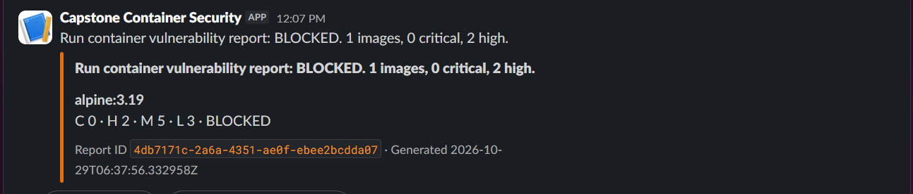
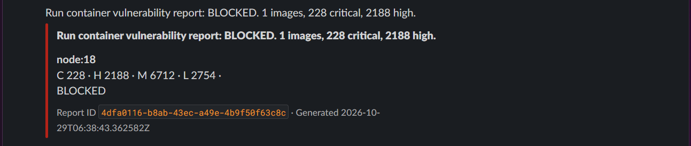
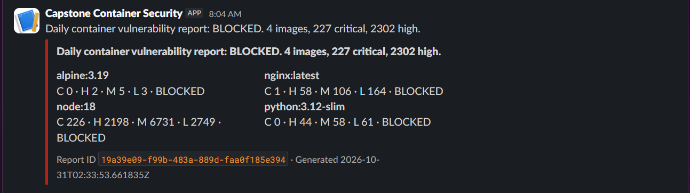
Final CI and Scheduled-Trigger Verification
I checked the final published main branch and the platform-recorded scheduled workflow. Main run #34 completed tests, scanning, reporting and evidence upload successfully. Summary run #2 has event type schedule, providing actual timer-trigger evidence. Their Slack steps were skipped, as shown by the original step records in E17.
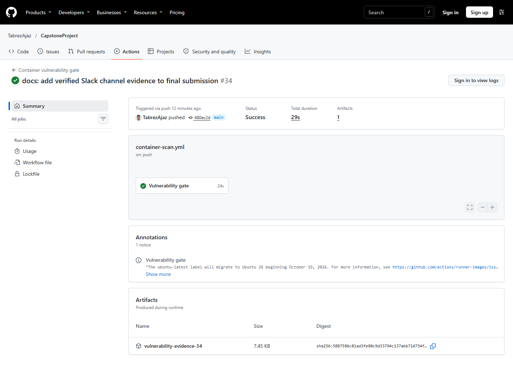
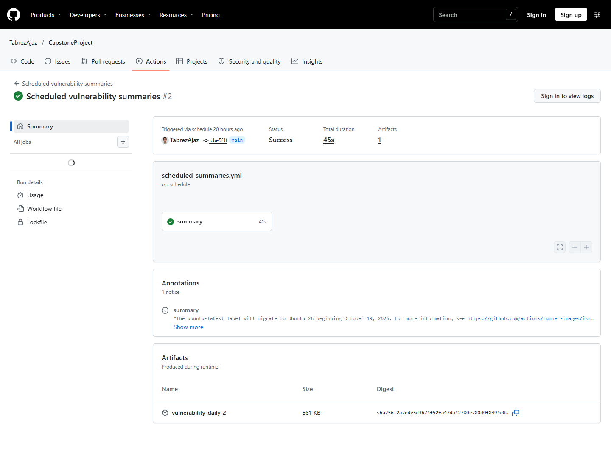
17. Milestone Appendices
- Sprint 1: Setup and Basic Scanning - historical design and setup narrative; reconstructed panels are not independent proof.
- Sprint 2: CI/CD Integration - milestone 16-test and pass/block evidence.
- Sprint 3: Reporting and Notifications - original report/transport/default-cadence evidence and its later updates.
- Sprint 4: Dashboard and Monitoring - isolated 35-test milestone and genuine browser captures.
- Sprint 5: Exceptions and Reliability - integrated 77-test evidence, original audit artifacts and limits.
- Viva Preparation - 93 searchable questions aligned to the implementation.
Appendices preserve their original dates, version descriptions and evidence context. This consolidated report supersedes obsolete planned-versus-delivered statements for the final Sprint 1-5 state without rewriting historical screenshots.
18. Conclusion
Through this project, I integrated container image scanning with repeatable CI security gates, consistent reports, Jenkins notifications, persistent scan history, monitoring and governed vulnerability exceptions. The five sprints developed a basic scan workflow into a tested system with explicit failure handling and reviewable evidence.
The results demonstrate the implemented Sprint 1-5 scope. Remaining notification setup and verification limits are listed in Section 13. Further work includes production hosting, stronger supply-chain controls and automated collection of CI artifacts.